Agentic CAD Parsing System - Parsing CAD Data
A system that runs inside a CAD application. It reads a DWG drawing, extracts what is in it, organizes the entities and objects, and answers questions about it. It inspects the whole drawing and prepares reports based on the user's needs and goals.
Main Process
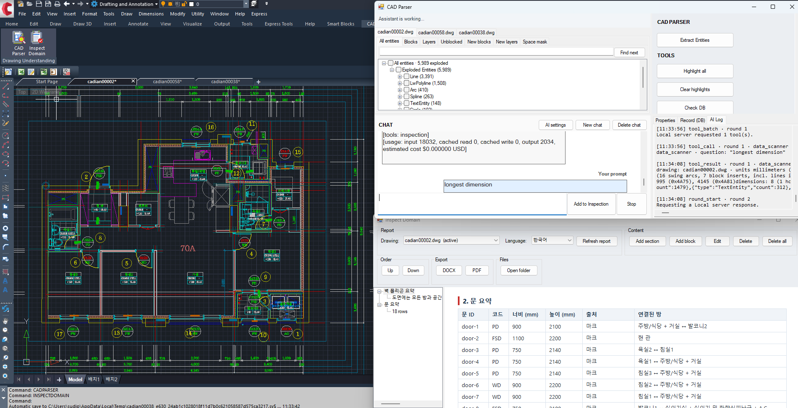
1. Introduction
An architectural drawing contains a lot of information about the building, machinery, piping and HVAC systems, and many other designs. Understanding such drawings needs a professional. For instance, making a report that lists wall thicknesses and classifies them (as load-bearing or non-load-bearing), or finding the connections in a piping system, takes a lot of time and effort, and human error cannot be avoided. To minimize such factors we need a system that actually analyzes the drawings and makes the reports. This project does that, and then puts an AI assistant on top of it, so that a user can simply analyze and extract the necessary information from complex uploaded drawings.
flowchart LR
A[DWG drawing]:::input --> B[Parse]:::process
B --> C[(Structured
knowledge)]:::store
C --> D[Graph
database]:::store
C --> E[AI agent]:::agent
E --> F[Answers,
analysis,
highlights,
reports]:::output
2. The problem: a DWG is not a Model or a Raster Image
A DWG file is vector data stored in a closed binary format, which is difficult to read with simple algorithms or systems. Nothing in it says "this is a bedroom" or "here is a piping system". For instance, see the following images.
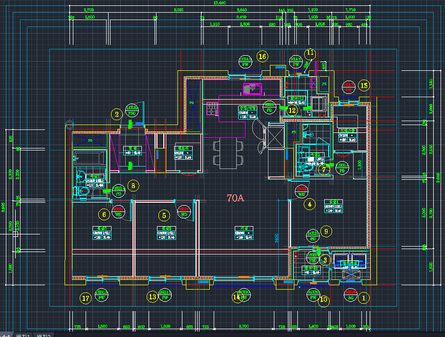
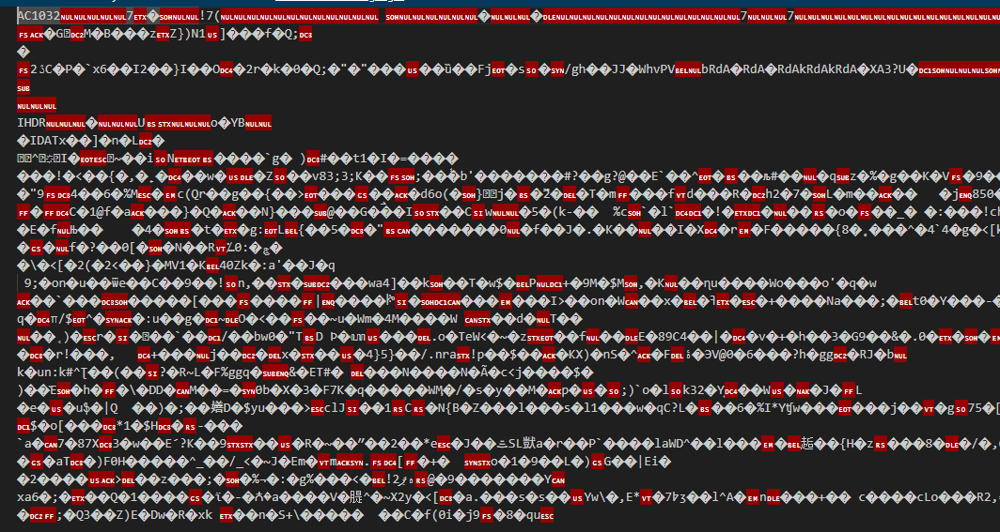
2.1 What the file actually contains
A floor plan file
├── Primitives lines, polylines, arcs, circles, hatches
├── Text names, sizes, notes, titles, legends, revisions
├── Symbols reusable blocks: a door, a toilet, an entire flat
│ ├── nested a symbol inside a symbol inside a symbol
│ └── external geometry that lives in a different file altogether
├── Layers groupings chosen by whoever drew it
└── Marks codes that refer to a door or a window
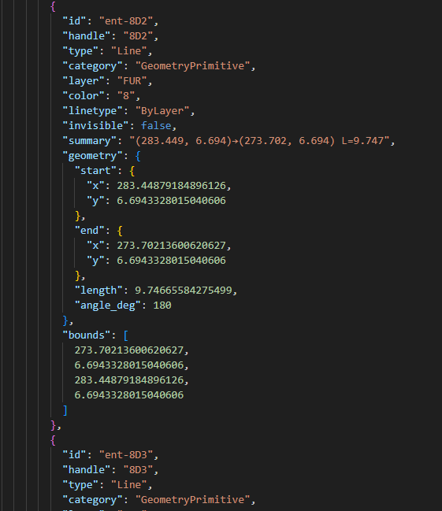
2.2 Why that is hard
Problems in the raw drawing
- No meaning. The file stores shapes and positions, not what anything is or what belongs to what.
- Everything overlaps. Furniture, hatching, dimensions and notes sit on top of the structure.
- Symbols hide their position. Real coordinates appear only after insertion, rotation, scale and mirroring are resolved. Exploding them destroys their identity.
- No standard. Every office draws and names things differently, often in more than one language.
- Repeated units. The same flat appears many times, mirrored or rotated, with the same names.
- Imperfect drawings. Lines miss by a millimetre, content sits on the wrong layer, labels sit outside what they name.
2.3 Why the obvious approaches fail
| Approach | Why it is not enough |
|---|---|
| Explode everything and analyse the shapes | Symbols lose their meaning, and the data multiplies |
| Send the file to a language model | Too large, and no exact geometry or counting |
| Image recognition on a rendered plan | Loses coordinates, units and identity |
| Manual templates per project | Does not scale; every customer draws differently |
For instance, analyzing different floor plans gives a different number of entities. See the following table.
| Drawing | Size | What it contains | Complexity |
|---|---|---|---|
| Single unit plan (one flat) | about 6,000 entities | rooms, doors, fixtures, marks, dimensions | Low |
| Multi-unit floor plan | about 25,000 entities | about 80 rooms across repeated unit types, mirrored and rotated, plus cores, shafts and stairs | Medium |
| Block plan (several buildings on one sheet) | larger again | every unit of every building, repeated, with shared site elements | High |
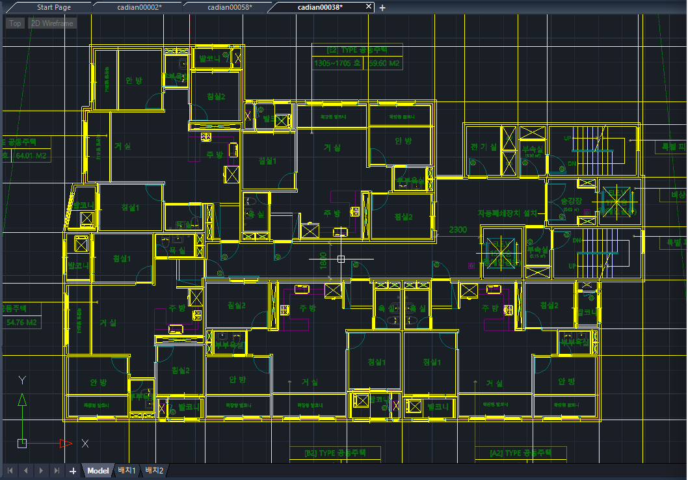
3. Parsing and storage
This stage does two things: it parses the drawing, and it stores the result in a database. Every entity is read, symbols and external references are resolved to real-world coordinates, and each entity is saved with a stable identifier so it can be found again later.
flowchart LR
A[DWG]:::input --> B[Read every entity:
lines, polylines, arcs,
circles, hatches, text]:::process
B --> C[Resolve symbols and
external references]:::process
C --> D[Real world coordinates,
in metres]:::process
D --> E[(Stored per drawing)]:::store
Parsing
├── Entities lines, polylines, arcs, circles, hatches, text
├── Symbols resolved to the leaf, including nested ones
├── External refs pulled in and marked with their origin
├── Units normalised, so every later number is in metres
└── Identity a stable identifier per drawing and per entity
An example of what is stored in the database:
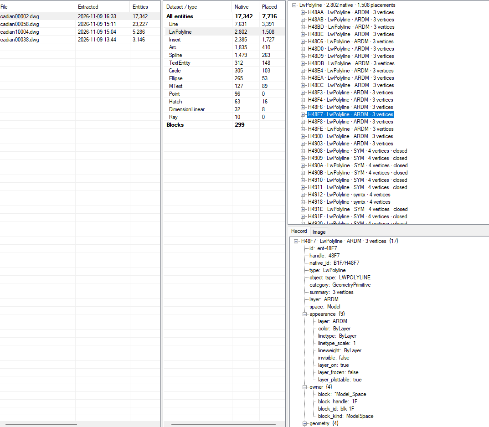
4. Semantic Relationships
Once the entities are parsed and stored, the next step is to find what they mean: which lines form a space, which form a wall, and how spaces, walls, doors and marks relate to each other. The result is stored in a graph database.
4.1 Semantic Relation Search
flowchart LR
A[Input
DWG drawing]:::input --> B[Entity parsing
and database]:::process
B --> C[Semantic search:
spaces, walls, openings]:::process
C --> D[(Graph database)]:::store
D --> E[Output
answers, highlights, reports]:::output
4.1.1 Finding polygons for spaces
Each space is found as a closed polygon on the plan and stored with its name, its area and the drawing entities behind it.
4.1.2 Finding walls and boundaries
Wall polygons are found with their thickness and length, and each space is linked to the walls that bound it.
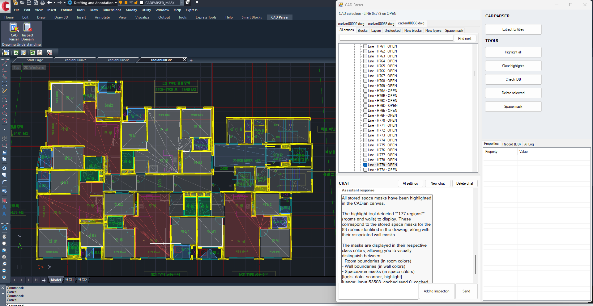
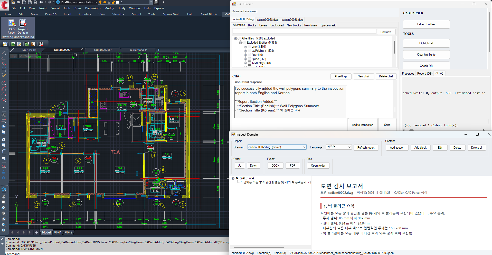
4.2 Relationship Search
The recovered items are connected in an ontology: Room, Wall, WallLine, Door, Window, Fixture and Mark, with relations such as hasWall, hasDoor, hasWindow, adjacent, sharesWall and markedBy. Questions about the drawing are answered by walking these relations.
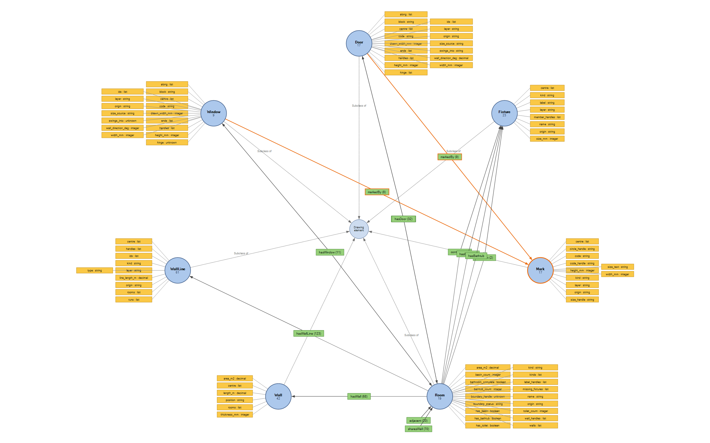
5. Why an AI agent
Users ask open questions such as Which bathrooms have no ventilation?, How many doors of this code are there, and where? or Put that in the report, in both languages.
The agent does not read the drawing. It reads the question, calls the tools below, and the tools read the structured knowledge. The answer comes back with its evidence highlighted on the drawing.
flowchart LR
U[Question]:::input --> M[Agent]:::agent
M --> T[Tools over the
structured knowledge]:::process
T --> O[Evidence]:::store
O --> M
M --> A[Answer + highlight]:::output
5.1 Why not simply give the model the file
| Model reads the file | Model reads the structured knowledge | |
|---|---|---|
| Size | too large for the model | a small, relevant slice |
| Exactness | approximate | exact and repeatable |
| Traceability | none | every value points back to the drawing |
Geometry and counting are done by code. The model is used for language and intent, which is what it is good at.
5.2 What the agent can reach
The agent works through a small set of named tools. The tree below shows each tool call and what it gives back.
%%{init: {"flowchart": {"nodeSpacing": 10, "rankSpacing": 70}}}%%
flowchart LR
A[AI agent]:::agent --> T[Tool calls]:::process
T --> Q[Query]:::group
Q --> find[find
items matching a description]:::tool
Q --> count[count
how many]:::tool
Q --> measure[measure
sizes and distances, with source]:::tool
Q --> relate[relate
how spaces, openings and walls connect]:::tool
T --> S[Show]:::group
S --> highlight[highlight
the answer drawn on the canvas]:::tool
T --> R[Report]:::group
R --> inspection[inspection
findings written into the report]:::tool
T --> C[Change]:::group
C --> draw[draw
new geometry added to the drawing]:::tool
C --> modify[modify
a proposed change to existing items]:::tool
C --> delete[delete
removes the selected items]:::tool
C --> create_block[create_block
a new symbol from a selection]:::tool
C -.-> AP[every change needs
human approval]:::note
T --> X[Raw data]:::group
X --> data_scanner[data_scanner
a sweep of all entities]:::tool
What each tool accepts and returns is part of the product and is not described here.
6. The agent harness
The model is only a small part of the agent. The harness around it runs each question: it sets a budget, keeps the context small, checks that every claim is backed by drawing evidence, records cost and timing, and keeps a proposed change separate from applying it.
flowchart LR
Q[Question]:::input --> B[Budget and scope
for this question]:::process
B --> L[Agent loop
tool call, result, reason]:::agent
L --> G{Backed by
drawing evidence?}:::decision
G -- yes --> A[Answer + highlight]:::output
G -- no --> U[Reported as unknown]:::note
L --> T[(Trace: tool calls,
timing, tokens, cost)]:::store
M[Hosted or
self-hosted model]:::tool -.-> L
- Grounded. Every claim carries the drawing entities behind it. What cannot be grounded is reported as unknown.
- Deterministic. Numbers come from code, so the same question gives the same numbers on any model.
- Observable. Every tool call is traced with its timing and outcome, and the cost is shown per answer.
- Bilingual. Answers follow the language of the question, and report content is stored in Korean and English.
7. Interaction and safety
The system shows its work on the drawing and never changes the file on its own.
- Evidence is temporary. Answers are drawn on the CAD canvas as highlights and see-through masks that disappear when cleared. The drawing itself is not altered.
- Changes are proposals. A change is first shown on the drawing and applied only after a person clicks approve.
- Everything is journalled. Each applied change is recorded, and the outcome is fed back to the agent.
flowchart LR
A[Change request]:::input --> P[Proposal shown
on the drawing]:::process
P --> D{Human decision}:::decision
D -- Approve --> F[Applied and
journalled]:::store
D -- Reject --> N[Nothing happens]:::note
8. Results
Measured on an unseen test plan
- Roughly 25,000 entities read and resolved.
- 66 spaces recovered across six repeated unit types; the large majority cleanly, the rest reported as approximate rather than presented as exact.
- Identical results in millimetres, in inches, and with the plan rotated.
- The same question returns the same numbers across runs and models, in Korean and in English.
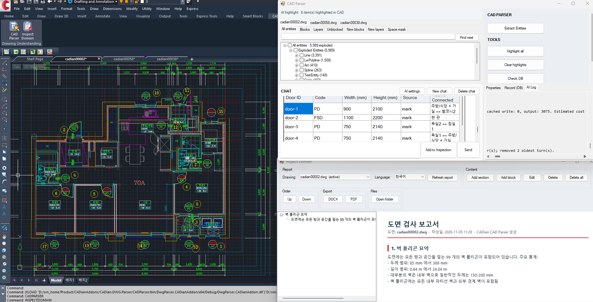
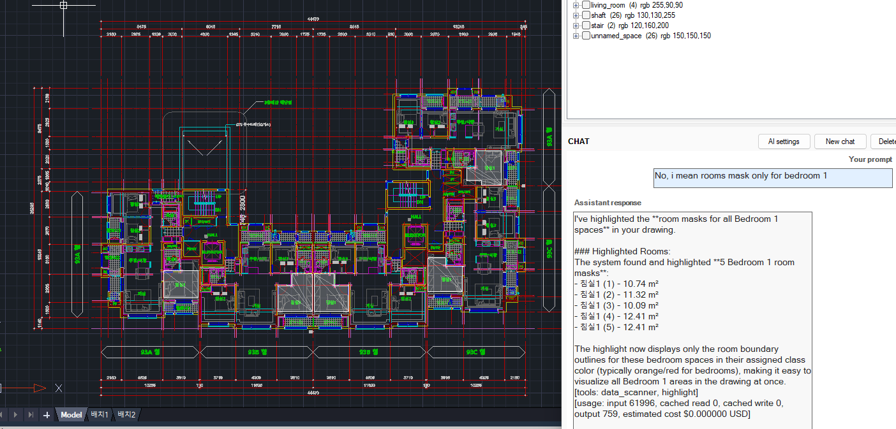
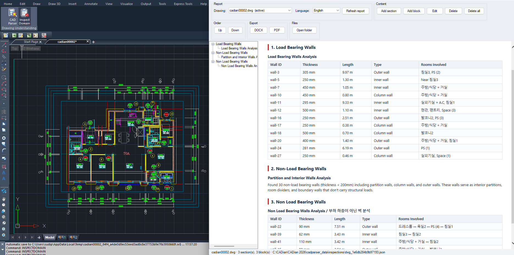
9. Graph database foundation
Everything the system recovers is stored as a graph, one per drawing. Each node is a thing on the plan, such as a Room, Wall, Door, Window, Fixture or Mark, with its properties and the drawing entity it came from. Each edge is a named relation such as hasWall, hasDoor, adjacent or markedBy. Questions about how things connect are answered by walking this graph, and selecting a node highlights it on the CAD canvas.
graph LR
M[Mark
code]:::input -- describes --> D[Door]:::process
D -- connects --> R1[Space A]:::store
D -- connects --> R2[Space B]:::store
R1 -- touches --> R2
F[Fixture]:::agent -- belongs to --> R1
W[Window]:::process -- opens from --> R1
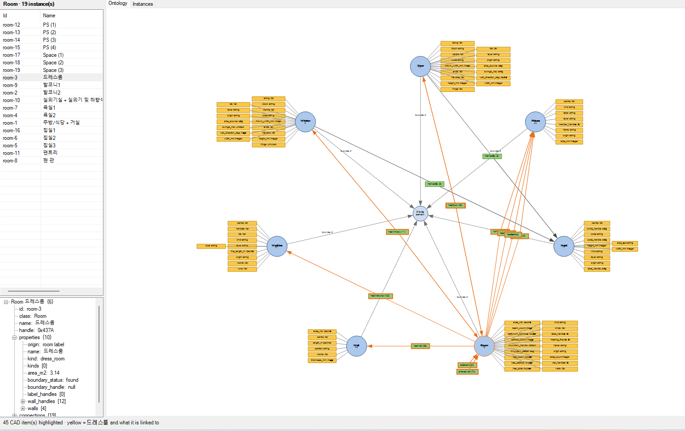
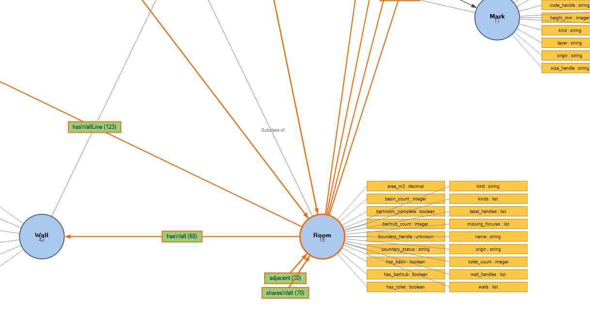
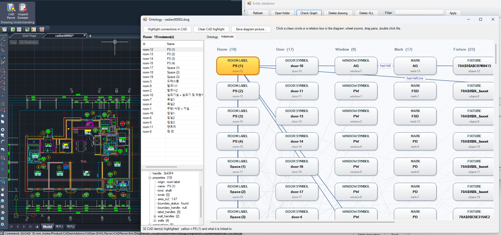
10. Summary
The system reads a DWG drawing, parses every entity into a database, recovers spaces, walls, openings and marks, and stores their relations in a graph. An AI agent then answers questions, inspects the drawing and writes bilingual reports through a small set of tools, with every answer highlighted on the drawing as evidence. Nothing in the drawing changes without human approval. It is tested on real residential drawings, from a single flat to a whole block.
Agentic CAD Parsing System - CAD Data Parsing
CAD 프로그램 안에서 실행되는 시스템이에요. DWG 도면을 읽고, 그 안의 Entity와 객체를 추출해 정리하고, 도면에 대한 질문에 답해요. 도면 전체를 검사하고, 사용자의 목적에 맞는 보고서를 만들어요.
주요 과정
1. 소개
건축 도면에는 건물, 설비, 배관, HVAC 등 많은 정보가 담겨 있어요. 이런 도면을 이해하려면 전문가가 필요해요. 예를 들어 벽 두께를 정리하고 내력벽과 비내력벽으로 분류한 보고서를 만들거나, 배관의 연결을 찾는 일은 시간과 노력이 많이 들고, 사람의 실수도 피하기 어려워요. 그래서 도면을 직접 분석하고 보고서를 만들어 주는 시스템이 필요해요. 이 프로젝트가 그 일을 하고, 그 위에 AI Assistant를 올려서 사용자가 복잡한 도면에서 필요한 정보를 쉽게 뽑아낼 수 있게 해요.
flowchart LR
A[DWG 도면]:::input --> B[Parsing]:::process
B --> C[(구조화된
지식)]:::store
C --> D[Graph
Database]:::store
C --> E[AI Agent]:::agent
E --> F[답변,
분석,
하이라이트,
보고서]:::output
2. 문제: DWG는 Model도 Raster Image도 아니다
DWG 파일은 닫힌 Binary 형식으로 저장된 Vector 데이터라서, 간단한 알고리즘으로는 읽기 어려워요. 파일 어디에도 "여기는 침실", "여기는 배관"이라고 적혀 있지 않아요. 아래 이미지를 보세요.
2.1 파일에 실제로 들어 있는 것
평면도 파일
├── Primitives 선, Polyline, 호, 원, Hatch
├── Text 이름, 치수, 메모, 제목, 범례
├── Symbols 재사용 Block: 문, 변기, 세대 하나
│ ├── nested Symbol 안의 Symbol
│ └── external 다른 파일에 있는 도형
├── Layers 그린 사람이 정한 묶음
└── Marks 문이나 창을 가리키는 코드
2.2 왜 어려운가
원본 도면의 문제
- 의미가 없어요. 파일에는 모양과 위치만 있고, 무엇인지, 무엇에 속하는지는 없어요.
- 모든 것이 겹쳐요. 가구, Hatch, 치수, 메모가 구조 위에 겹쳐 있어요.
- Symbol은 위치를 숨겨요. 삽입, 회전, 축척, 반전을 풀어야 실제 좌표가 나와요. Explode하면 정체를 잃어요.
- 표준이 없어요. 회사마다 그리는 방식과 이름이 다르고, 언어도 섞여요.
- 세대가 반복돼요. 같은 세대가 반전되거나 회전되어 여러 번, 같은 이름으로 나와요.
- 도면이 완벽하지 않아요. 선이 1mm 어긋나고, 내용이 엉뚱한 Layer에 있고, 라벨이 대상 밖에 있어요.
2.3 뻔한 방법이 실패하는 이유
| 방법 | 부족한 이유 |
|---|---|
| 전부 Explode해서 모양 분석 | Symbol의 의미가 사라지고 데이터가 늘어나요 |
| 파일을 언어 모델에 바로 입력 | 너무 크고, 정확한 기하 계산과 개수 세기가 안 돼요 |
| 렌더링한 평면 이미지 인식 | 좌표, 단위, 정체를 잃어요 |
| 프로젝트마다 수동 템플릿 | 확장이 안 되고, 고객마다 그리는 방식이 달라요 |
예를 들어 평면도마다 Entity 수가 크게 달라요. 아래 표를 보세요.
| 도면 | 크기 | 포함 내용 | 복잡도 |
|---|---|---|---|
| 단일 세대 평면 (세대 하나) | 약 6,000 Entity | 방, 문, 기구, Mark, 치수 | 낮음 |
| 여러 세대 층 평면 | 약 25,000 Entity | 반복되는 세대 유형에 걸친 약 80개의 방, 반전과 회전 포함, 코어, Shaft, 계단 | 중간 |
| 블록 평면 (한 장에 여러 동) | 더 큼 | 모든 동의 모든 세대가 반복되고, 공용 요소 포함 | 높음 |
3. Parsing과 저장
이 단계는 두 가지를 해요. 도면을 Parsing하고, 결과를 Database에 저장해요. 모든 Entity를 읽고, Symbol과 외부 참조를 실제 좌표로 풀고, 각 Entity를 나중에 다시 찾을 수 있도록 고유 ID와 함께 저장해요.
flowchart LR
A[DWG]:::input --> B[모든 Entity 읽기:
선, Polyline, 호,
원, Hatch, Text]:::process
B --> C[Symbol과
외부 참조 풀기]:::process
C --> D[실제 좌표,
미터 단위]:::process
D --> E[(도면별 저장)]:::store
Parsing
├── Entities 선, Polyline, 호, 원, Hatch, Text
├── Symbols 중첩된 것까지 끝까지 풀기
├── External refs 가져와서 출처 표시
├── Units 미터로 통일
└── Identity 도면별, Entity별 고유 ID
Database에 저장된 예:
4. 의미 관계
Entity를 Parsing해 저장한 다음에는 의미를 찾아요. 어떤 선들이 공간을 이루고, 어떤 선들이 벽인지, 그리고 공간, 벽, 문, Mark가 서로 어떻게 연결되는지요. 결과는 Graph Database에 저장해요.
4.1 Semantic Relation Search
flowchart LR
A[입력
DWG 도면]:::input --> B[Entity Parsing과
Database]:::process
B --> C[Semantic Search:
공간, 벽, 개구부]:::process
C --> D[(Graph Database)]:::store
D --> E[출력
답변, 하이라이트, 보고서]:::output
4.1.1 공간 Polygon 찾기
각 공간을 평면 위의 닫힌 Polygon으로 찾아, 이름, 면적, 근거가 되는 도면 Entity와 함께 저장해요.
4.1.2 벽과 경계 찾기
벽 Polygon을 두께와 길이와 함께 찾고, 각 공간을 그 공간을 둘러싼 벽과 연결해요.
4.2 Relationship Search
찾아낸 항목을 Ontology로 연결해요. Room, Wall, WallLine, Door, Window, Fixture, Mark 클래스와 hasWall, hasDoor, hasWindow, adjacent, sharesWall, markedBy 같은 관계예요. 도면에 대한 질문은 이 관계를 따라가며 답해요.
5. 왜 AI Agent인가
사용자는 환기가 없는 욕실은 어디야?, 이 코드의 문은 몇 개이고 어디에 있어?, 그걸 두 언어로 보고서에 넣어 줘 같은 열린 질문을 해요.
Agent는 도면을 직접 읽지 않아요. 질문을 읽고, 아래 Tool을 호출하고, Tool이 구조화된 지식을 읽어요. 답은 근거가 도면 위에 하이라이트된 채로 돌아와요.
flowchart LR
U[질문]:::input --> M[Agent]:::agent
M --> T[구조화된 지식 위의
Tool]:::process
T --> O[근거]:::store
O --> M
M --> A[답변 + 하이라이트]:::output
5.1 왜 모델에 파일을 그냥 주지 않는가
| 모델이 파일을 읽을 때 | 모델이 구조화된 지식을 읽을 때 | |
|---|---|---|
| 크기 | 모델에 너무 큼 | 작고 관련 있는 조각 |
| 정확성 | 근사치 | 정확하고 반복 가능 |
| 추적성 | 없음 | 모든 값이 도면을 가리킴 |
기하 계산과 개수 세기는 코드가 해요. 모델은 잘하는 일인 언어와 의도 파악에만 써요.
5.2 Agent가 쓸 수 있는 것
Agent는 이름이 정해진 작은 Tool 집합으로 일해요. 아래 트리는 각 Tool 호출과 그것이 돌려주는 결과예요.
%%{init: {"flowchart": {"nodeSpacing": 10, "rankSpacing": 70}}}%%
flowchart LR
A[AI Agent]:::agent --> T[Tool 호출]:::process
T --> Q[Query]:::group
Q --> find[find
설명에 맞는 항목]:::tool
Q --> count[count
개수]:::tool
Q --> measure[measure
크기와 거리, 출처 포함]:::tool
Q --> relate[relate
공간, 개구부, 벽의 연결]:::tool
T --> S[Show]:::group
S --> highlight[highlight
캔버스에 답 그리기]:::tool
T --> R[Report]:::group
R --> inspection[inspection
보고서에 판정 기록]:::tool
T --> C[Change]:::group
C --> draw[draw
새 도형 추가]:::tool
C --> modify[modify
기존 항목 변경 제안]:::tool
C --> delete[delete
선택 항목 삭제]:::tool
C --> create_block[create_block
선택 영역으로 새 Symbol]:::tool
C -.-> AP[모든 변경은
사람의 승인 필요]:::note
T --> X[Raw data]:::group
X --> data_scanner[data_scanner
모든 Entity 훑기]:::tool
각 Tool의 입력과 출력은 제품의 일부라서 여기서는 설명하지 않아요.
6. Agent Harness
모델은 Agent의 작은 부분이에요. 주변의 Harness가 질문마다 예산을 정하고, Context를 작게 유지하고, 모든 주장이 도면 근거로 뒷받침되는지 확인하고, 비용과 시간을 기록하고, 변경 제안과 적용을 분리해요.
flowchart LR
Q[질문]:::input --> B[질문별
예산과 범위]:::process
B --> L[Agent Loop
Tool 호출, 결과, 추론]:::agent
L --> G{도면 근거가
있는가?}:::decision
G -- 예 --> A[답변 + 하이라이트]:::output
G -- 아니오 --> U[알 수 없음으로 보고]:::note
L --> T[(Trace: Tool 호출,
시간, Token, 비용)]:::store
M[Hosted 또는
Self-hosted 모델]:::tool -.-> L
- 근거 기반. 모든 주장에 근거가 되는 도면 Entity가 붙어요. 근거가 없으면 알 수 없음으로 보고해요.
- 결정적. 숫자는 코드가 계산하므로, 어떤 모델이든 같은 질문에 같은 숫자가 나와요.
- 관측 가능. 모든 Tool 호출의 시간과 결과를 기록하고, 답마다 비용을 보여 줘요.
- 이중 언어. 질문한 언어로 답하고, 보고서 내용은 한국어와 영어로 함께 저장해요.
7. 상호작용과 안전
시스템은 작업 과정을 도면 위에 보여 주고, 파일을 스스로 바꾸지 않아요.
- 근거는 임시예요. 답은 CAD 캔버스 위에 하이라이트와 반투명 Mask로 그려지고, 지우면 사라져요. 도면 자체는 바뀌지 않아요.
- 변경은 제안이에요. 변경은 먼저 도면 위에 표시되고, 사람이 승인 버튼을 눌러야 적용돼요.
- 모두 기록돼요. 적용된 변경은 기록되고, 결과는 Agent에게 다시 전달돼요.
flowchart LR
A[변경 요청]:::input --> P[도면 위에
제안 표시]:::process
P --> D{사람의 결정}:::decision
D -- 승인 --> F[적용 및 기록]:::store
D -- 거부 --> N[아무 일도 없음]:::note
8. 결과
처음 보는 테스트 평면에서 측정
- 약 25,000개의 Entity를 읽고 풀었어요.
- 반복되는 6개 세대 유형에서 66개 공간을 복원했어요. 대부분은 깨끗하게, 나머지는 정확한 값이 아니라 근사치로 보고했어요.
- mm, inch, 회전된 평면에서 모두 같은 결과가 나왔어요.
- 같은 질문은 실행과 모델이 달라도, 한국어든 영어든 같은 숫자를 돌려줘요.
9. Graph Database 기반
시스템이 찾아낸 모든 것은 도면마다 하나의 Graph로 저장돼요. 각 Node는 Room, Wall, Door, Window, Fixture, Mark 같은 평면 위의 사물이고, 속성과 출처가 되는 도면 Entity를 가져요. 각 Edge는 hasWall, hasDoor, adjacent, markedBy 같은 이름 있는 관계예요. 연결에 대한 질문은 이 Graph를 따라가며 답하고, Node를 선택하면 CAD 캔버스에 하이라이트돼요.
graph LR
M[Mark
코드]:::input -- 설명 --> D[Door]:::process
D -- 연결 --> R1[공간 A]:::store
D -- 연결 --> R2[공간 B]:::store
R1 -- 접함 --> R2
F[Fixture]:::agent -- 소속 --> R1
W[Window]:::process -- 열림 --> R1
10. 요약
이 시스템은 DWG 도면을 읽어 모든 Entity를 Database에 Parsing하고, 공간, 벽, 개구부, Mark를 복원해 그 관계를 Graph에 저장해요. 그 위에서 AI Agent가 작은 Tool 집합으로 질문에 답하고, 도면을 검사하고, 이중 언어 보고서를 쓰며, 모든 답은 도면 위에 근거로 하이라이트돼요. 사람의 승인 없이는 도면의 어떤 것도 바뀌지 않아요. 세대 하나부터 블록 전체까지 실제 주거 도면으로 테스트하고 있어요.